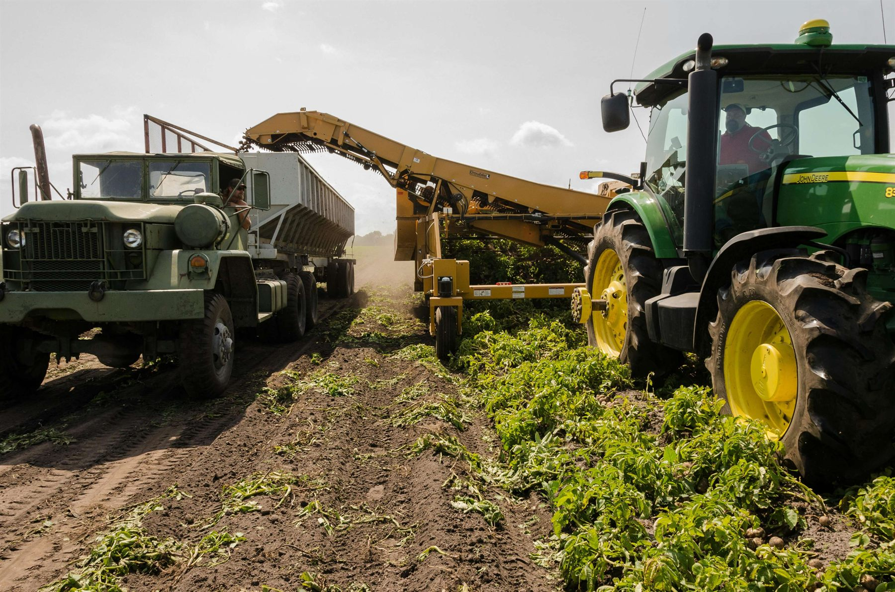
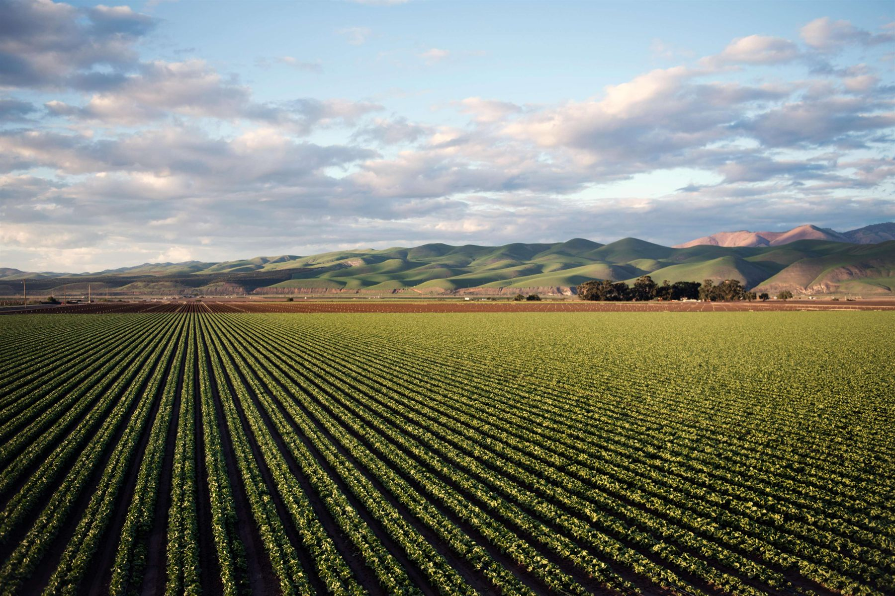

A jégkár, az aszály vagy egy géptörés egyetlen szezonban nullázhatja az egész éves munkát. A kérdés nem az, hogy legyen-e biztosítás, hanem hogy melyik feltételek valóban védenek, ha baj van.
A mezőgazdasági biztosítások díjai és kizárásai biztosítónként eltérnek. Egymás mellé tesszük az ajánlatokat, és elmagyarázzuk, mit fed ténylegesen, mit nem, és mekkora az állami díjtámogatás az Ön termékkultúrájára.
Kb. 3 perc kitölteni. Általában 1 munkanapon belül visszahívjuk.
A Mezőgazdasági Kockázatkezelési Rendszer (MKR) keretében az elveszített terménykár-díj nagy részét visszaigényelheti. Megmutatjuk, melyik kultúrára és fedezetre jár a támogatás.
Egy mezőgazdasági kárbejelentés összetett folyamat. Segítünk összegyűjteni a szükséges iratokat és végigkísérjük az eljárást, nemcsak a kötésnél.
A Nyírség talajviszonyai, az aszály- és jégkárkockázat a megye egyes részein kiemelt. Ez befolyásolja, melyik fedezet szükséges és melyik biztosítónál érdemes kötni.

A mezőgazdasági biztosítások részletei eltérnek a hagyományos vagyonbiztosításoktól. Néhány pont, ahol a legtöbb probléma utólag derül ki:

Nem az ár az egyetlen szempont. A kizárások, az önrész mértéke és az állami díjtámogathatóság legalább ennyire számít.
Az MKR rendszeren belül egyes növénybiztosítások díjának 50–70%-a visszaigényelhető. Nem minden biztosító és fedezet jogosult rá automatikusan.
Mezőgazdasági kárbejelentésnél a határidő és a dokumentáció kritikus. Késedelmes bejelentés esetén a biztosító csökkentheti vagy megtagadhatja a kifizetést.
A mezőgazdasági géppark biztosíthatósága a gép korától, értékétől és típusától függ. Az üzemszünet-fedezet különösen betakarítási szezonban fontos.
Nem mindegy, mit fedez ténylegesen a szerződés. A különbség az önrészben, a kizárásokban és az állami támogathatóságban is megjelenik.
Szántóföldi növények, szőlő, gyümölcsös, zöldségkultúrák védelme időjárási károkra. Az állami díjtámogatás itt a legjelentősebb.
Az állatállomány védelme elhullás, baleset és betegség esetére. A feltételek és kizárások állatfajonként, biztosítónként eltérnek.
Traktorok, kombájnok, egyéb gépek meghibásodása esetén a javítás vagy pótlás költségét fedezi. Üzemszünet-kiegészítő különösen betakarításkor kritikus.
Kattintson a kártyára, mobilon koppintson.
A bank vagyonbiztosítást vagy állatbiztosítást kér. Nem mindegy, melyik biztosítónál kötik meg.
Megmutatjuk, mit fed a banki elvárás és melyik biztosítónál éri meg kötni. Segítünk intézni is.
A bejelentési határidő és a dokumentáció kritikus. Hibás bejelentésnél a biztosító csökkentheti a kifizetést.
Segítünk a helyszíni szemle előkészítésében és a biztosítóval való egyeztetésben is.
Az MKR díjtámogatást csak meghatározott feltételekkel és biztosítókon keresztül lehet igénybe venni.
Kultúrától és területtől függően más-más mértékű a visszatérítés. Segítünk kiszámítani és kiválasztani a megfelelő biztosítót.
Több gép és eszköz egyszerre, eltérő korokkal és értékekkel. Flottakedvezmény is elérhető.
Egyszerre több gép biztosítása egyszerűsíti az adminisztrációt és csökkenti a díjat. Segítünk összeállítani.
Töltse ki az online űrlapot (kb. 3 perc), mi visszahívjuk az összehasonlított ajánlatokkal. Érthetően, elköteleződés nélkül.
A növénybiztosítás az éghajlati kockázatokat fedi: jégeső, aszály, fagy, vihar. Az állatbiztosítás az elhullás és betegség esetére véd. A géptörés biztosítás a gép meghibásodásának és az üzemszünetnek a költségét fedezi. A kombinált csomagok nem mindig olcsóbbak, mint az egyedi megoldások.
A Mezőgazdasági Kockázatkezelési Rendszer (MKR) keretében bizonyos növénybiztosítási díjak 50–70%-a visszaigényelhető az állami alaptól. A feltétel: az adott biztosító és fedezet listán kell lennie, és a gazda regisztrált legyen az MKR-ben. Agrárbanki hiteleknél a bank is kérhet biztosítást feltételként.
Az EAFRD és MFB pályázatoknál a vagyonbiztosítás megléte kötelező lehet. Ha nem megfelelő a biztosítás, a pályázati forrás elveszhet.
Nem a biztosítók kiadványait olvassuk fel. Megmutatjuk a kizárásokat, az önrész feltételeit, és elmagyarázzuk, mi az, amin pénz múlhat.
Amit általában az első egyeztetésen kérdeznek.
A leggyakoribb kérdések, amelyek kötés előtt derülnek ki, de utána már nem lehet visszacsinálni.
Ezeknek a biztosítóknak az ajánlatait hasonlítjuk össze az Ön számára


Közelgő időjárási károk – korlátozott keretből döntsd el, melyik mezőt biztosítod be.
Kattints a mezőre a biztosításhoz · 🧊 Jégkár ☀️ Aszály ❄️ Fagykár ⛈️ Vihar · 3 szezon
Ha már mezőgazdasági biztosítást köt, ezeket is érdemes megnézni: